무선설비산업기사 (2009-05-10 기출문제)
1과목: 디지털 전자회로
1. 다음 그림에서 펄스의 반복 주파수 f[MHz]는? (단, 시간축 단위는 [μs]이다.)
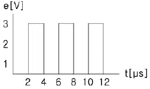
- 0.0625
- 0.125
- 0.25
- 0.5
(정답률: 72%)

2. 다음 FET 증폭회로의 전압이득은 약 얼마인가) ?단, 9m=5[℧], γds = 100[kΩ])
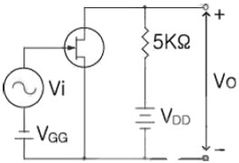
- -15.5
- -23.8
- -33.8
- -50
(정답률: 84%)
3. 다이오드 직선검파회로에서 변조도 50[%], 진폭 10√2[V]인 AM 피변조파가 인가되었을 때 부하저항 RL에 나타나는 변조 신호파의 실효치는? (단, 검파효율은 80[%]이다.)
- 4[V]
- 5[V]
- 8[V]
- 10[V]
(정답률: 38%)
4. 그림과 같은 회로의 명칭은? (단, S는 합, C는 자리올림이다.)
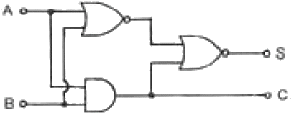
- Counter
- Full Adder
- Exclusive OR
- Half Adder
(정답률: 80%)
5. 제너 다이오드를 주로 사용하는 회로는?
- 증폭회로
- 검파회로
- 전압안정화회로
- 저주파발진회로
(정답률: 87%)
6. 다음은 수정편의 리액턴스 특성이다. 발진에 이용되는 각 주파수의 범위는?
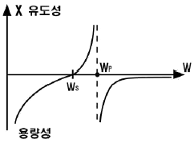
- ωs＜ω＜ωp
- ωp＜ω
- ωs＞ω
- ωs=ω
(정답률: 85%)
7. 다음 회로에서 입력전압 Vi=2[V], R1=10[kΩ]일 때 출력전압 V0가 6[V]일 경우 Rf값은 몇 [kΩ]인가?
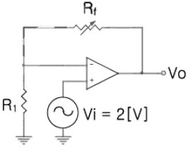
- 20
- 40
- 60
- 80
(정답률: 85%)
8. 아래 논리회로에서 각 입력에 대한 출력 (Y1 Y2 Y3 Y4)은?
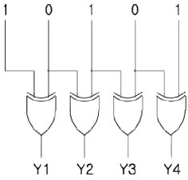
- 1000
- 1111
- 1100
- 1101
(정답률: 93%)
9. 다음 중 논리식
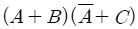
를 간단히 하면?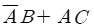
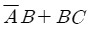
- AC+BC
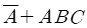
(정답률: 64%)
10. 다음과 같은 연산 증폭회로에서 Z에 흐르는 전류 I의 값은 얼마인가?
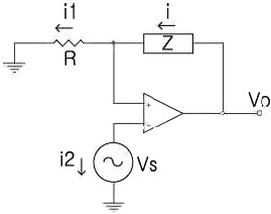
- 0
- i1
- (Z/R)i1
- i1+i2
(정답률: 85%)
11. 외부 트리거 입력신호가 인가되는 경우에만 폭이 0.1[ms]이고 전압이 5[V]인 펄스를 발생시켜 출력하고자 한다. 이러한 목적에 가장 적합한 것은?
- 시미트 트리거회로
- 비안정 멀티바이브레이터
- 쌍안정 멀티바이브레이터
- 단안정 멀티바이브레이터
(정답률: 60%)
12. 정논리(Positive Logic)의 다음 회로에서 A, B, C를 입력, Y를 출력이라고 하면 이는 어떤 논리 게이트인가?
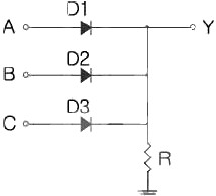
- AND 게이트
- OR 게이트
- EX-OR 게이트
- NAND 게이트
(정답률: 75%)
13. 연산증폭기에서 차신호에 대한 전압이득이 10000이고 공통모드 신호에 대한 전압이득이 0.5일 때 증폭기의 CMRR는 얼마인가?
- 20000
- 10000
- 4000
- 1000
(정답률: 87%)
14. 다음 논리 IC 중 전력소모가 가장 적은 것은?
- DTL
- TTL
- CMOS
- ECL
(정답률: 85%)
15. JK플립플롭을 사용하여 D형 플립플롭을 만들려면 외부 결선은 어떻게 하는 것이 적합한가?
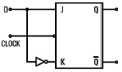
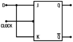
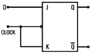
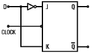
(정답률: 84%)
16. 전압 증폭도가 20[dB]와 60[dB]인 증폭기를 직렬로 연결하면 종합 전압이득은 얼마인가?
- 10
- 100
- 1000
- 10000
(정답률: 67%)
17. 다음 중 달링턴(Darlington) 이미터 플로워에 대한 설명으로 거리가 먼 것은?
- 전류 증폭률은 단일 이미터 플로워보다 커진다.
- 입력저항이 단일 이미터 플로워보다 커진다.
- 전압이득은 1에 가깝다.
- 출력저항은 단일 이미터 플로워보다 100배 이상 커진다.
(정답률: 73%)
18. 다음 중 수정 발진기의 주파수 안정도가 양호한 이유로 가장 적합한 것은?
- 수정편의 Q가 매우 높다.
- 수정 진동자의 온도 특성이 안정적이다.
- 발진조건을 만족시키는 유도성 주파수 범위가 넓다.
- 부하변동의 영향을 전혀 받지 않는다.
(정답률: 81%)
19. 그림과 같은 카르노 맵에서 얻어지는 불 대수식은?
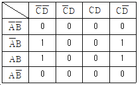
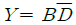
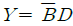
- Y=AB
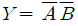
(정답률: 87%)
20. T형 플립플롭에 대한 설명으로 틀린 것은?
- 토글 플립플롭(toggle flip-flop)이라고도 한다.
- 클록이 들어올 때마다 상태가 반전된다.
- 출력파형의 주파수는 입력파형의 주파수와 동일하다.
- 1/2분주회로 또는 계수회로에 많이 쓰인다.
(정답률: 76%)
2과목: 무선통신 기기
21. 다음 중 IDC 회로를 사용하는 목적으로 가장 적합한 것은?
- 주파수 체배를 정확하게 하기 위하여
- 최대 주파수 편이가 규정치를 넘지 않게 하기 위하여
- 반송파 진폭을 일정하게 하여 주파수 편이를 좋게하기 위하여
- 반송파 주파수를 일정하게 하기 위하여
(정답률: 73%)
22. 다음 중 수신기의 특성 측정 또는 조정에 있어서 필요하지 않는 것은?
- 감쇠기
- 볼로메터
- 의사안테나
- 표준신호발생기
(정답률: 50%)
23. PSK 통신에서 반송파간의 위상차(라디안)은? (단, M은 진수이다.)
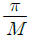
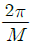
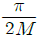
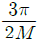
(정답률: 81%)
24. 다음 중 GPS 시스템의 우주부문에 대한 설명으로 적합하지 않은 것은?
- 위성의 고도는 약 20200[km]이다.
- 한 궤도면에는 최소 4개의 위성이 존재한다.
- 궤도면은 지구의 적도면과 약 55도의 각도를 이루고 있다.
- 모두 26개의 위성으로 구성되며 이 중 22개는 항법에 사용되고 4개는 예비용이다.
(정답률: 79%)
25. 다음 중 슈퍼헤테로다인 수신기에서 고주파 증폭회로의 역할로 적합하지 않은 것은?
- 감도 향상
- S/N비 개선
- 불요방사의 억제
- 근접주파수 선택도의 개선
(정답률: 63%)
26. 다음 중 진폭과 위상을 변화시켜 정보를 전송하는 디지털 변조방식은?
- PSK
- QAM
- FSK
- ASK
(정답률: 100%)
27. FM 수신기에서 수신입력 레벨을 감소 시켜가면 어떤 값에서 출력의 S/N이 급격히 감소하는 현상이 나타난다. 이때의 수신입력레벨을 무엇이라고 하는가?
- 한계레벨
- 피크레벨
- 신호레벨
- 잡음레벨
(정답률: 83%)
28. 80[MHz]의 반송파를 10[kHz] 신호파로 FM 변조했을 때 최대 주파수 편이가 ±60[kHz]이면 변조지수는 얼마인가?
- 4
- 6
- 8
- 12
(정답률: 82%)
29. 다음 중 축전지 취급상 주의 사항으로 적합하지 않은 것은?
- 방전 직후 곧 충전할 것
- 불순물이 들어가지 않도록 할 것
- 충전 전류는 과대하게 할 것
- 전해액면이 극판 위에 차 있게 할 것
(정답률: 85%)
30. 다음 중 정합필터는 어떤 회로로 구현할 수 있는가?
- 하나의 곱셈기와 하나의 적분기
- 하나의 곱셈기와 하나의 미분기
- 하나의 가산기와 하나의 적분기
- 하나의 가산기와 하나의 미분기
(정답률: 70%)
31. 단동조 증폭기의 동조 회로에 병렬로 저항을 삽입하면 대역폭은?
- 넓어진다.
- 좁아진다.
- 변함없다.
- 불규칙하게 변한다.
(정답률: 85%)
32. 다음 중 채널 용량을 증가시키기 위한 방법으로 적합하지 않은 것은?
- 대역폭을 넓힌다.
- 신호전력을 증가시킨다.
- 잡음전력을 감소시킨다.
- 비화통신방식을 사용한다.
(정답률: 82%)
33. 통신속도가 1200[baud]일 때 4상식 위상변조를 하면 데이터 신호속도는 몇 [bps]인가?
- 600[bps]
- 1200[bps]
- 2400[bps]
- 4800[bps]
(정답률: 91%)
34. 다음 중 AM 수신기의 중간주파수를 높게 선정했을 때 개선되지 않는 것은?
- 인입현상
- 지연특성
- 근접주파수 선택도
- 영상주파수 선택도
(정답률: 49%)
35. 다음 중 송신기에서 스퓨리어스 발사에 대한 설명으로 적합하지 않은 것은?
- 주파수 변환기의 비직선성에 의해서도 발생
- 고전력 증폭기의 비직선성에 의해서도 발생
- 타 통신망에 혼신과 장애를 일으킬 수 있음
- 송신기를 고출력으로 운용하면 스퓨리어스 발사가 낮아짐
(정답률: 78%)
36. 전원 회로에서 무부하시 전압이 200[V]이고 부하시 전압이 185[V]였다면 전압 변동률은 약 몇 [%]인가?
- 5[%]
- 7[&]
- 8[%]
- 10[%]
(정답률: 91%)
37. 다음 중 실효선택도와 관련이 가장 먼 것은?
- 혼변조
- 상호변조
- 감도억압효과
- 근접주파수 선택도
(정답률: 62%)
38. 다음 중 DSB 통신방식과 비교했을 때 SSB통신방식의 장점으로 적합하지 않은 것은?
- 비화성을 유지할 수 있다.
- 선택성 페이딩의 영향이 적다.
- 반송파가 없기 때문에 특수한 AGC회로가 필요 없다.
- 적은 송신전력으로 양질의 통신이 가능하다.
(정답률: 84%)
39. 다음 중 PCM 통신 방식에서 송신 과정으로 가장 적합한 것은?
- 표본화 ⟹ 양자화 ⟹ 부호화 ⟹ 압축
- 양자화 ⟹ 표본화 ⟹ 부호화 ⟹ 압축
- 양자화 ⟹ 표본화 ⟹ 압축 ⟹ 부호화
- 표본화 ⟹ 압축 ⟹ 양자화 ⟹ 부호화
(정답률: 96%)
40. 다음 중 전송부호가 가져야 하는 조건으로 적합하지 않은 것은?
- DC 성분이 포함되어야 한다.
- 동기정보가 충분히 포함되어야 한다.
- 전송 대역폭이 압축되어야 한다.
- 전송부호의 코딩효율이 양호해야 한다.
(정답률: 86%)
3과목: 안테나 개론
41. 중파 방송국에서 사용하는 원정관 안테나의 수평면내 지향 특성은?
- 반구형
- 8자형
- 심장형
- 무지향성
(정답률: 85%)
42. λ/4 수직접지 안테나로 400[kw]의 전력을 복사할 때 200[km]떨어진 곳에서의 최대 전계강도는 약 몇 [mV/m]인가? (단, 효율은 100[%]이고, 대지는 완전도체로 본다.)
- 313[mV/m]
- 31.3[mV/m]
- 3.13[mV/m]
- 0.213[mV/m]
(정답률: 80%)
43. 다음 중 λ/4 수직 접지안테나에 대한 설명으로 옳지 않은 것은?
- 복사저항은 약 36.56[Ω]이다.
- 장ㆍ중파대의 방송용으로 주로 사용된다.
- 수평면내에 지향특성은 무지향성이다.
- 안테나 길이가 λ/4일 때 기저부 전류가 최소가 되어 효율이 가장 높다.
(정답률: 65%)
44. 전파를 상공에 수직으로 발사하여 0.002초 후에 그 전파가 수신되었다면 전리층의 높이는?
- 150[km]
- 300[km]
- 600[km]
- 1000[km]
(정답률: 81%)
45. 다음 중 고주파 전력을 전송하기 위한 급전선의 필요조건이 아닌 것은?
- 전송효율이 좋을 것
- 급전성의 파동 임피던스가 클 것
- 송신용일 때 절연내력이 클 것
- 유도방해를 받거나 주지 말 것
(정답률: 85%)
46. 다음 중 전리층을 이용한 단파통신에서 최적운용주파수에 대한 설명으로 가장 적합한 것은?
- 전리층 반사주파수 중에서 가장 낮은 주파수
- 전리층 반사주파수 중에서 가장 높은 주파수
- 최저사용주파수의 85%에 해당하는 주파수
- 최고사용주파수의 85%에 해당하는 주파수
(정답률: 82%)
47. 폴디드(folded) 안테나(소자수 2개)에 10[A]의 전류가 흐를 때 복사전력은 약 몇 [kW]인가?
- 11.2[kW]
- 29.2[kW]
- 58.4[kW]
- 116.8[kW]
(정답률: 75%)
48. 주간에 15[MHz]로 외국과 원거리 통신을 하고자 했을 때 이용되는 전리층으로 가장 적합한 것은?
- E층
- D층
- F층
- Es층
(정답률: 72%)
49. 다음 중 등가지구 반경계수에 대한 설명으로 적합하지 않은 것은?
- 전파 투시도를 그릴 때 편리하다.
- 온대지방에서 그 값은 4/3 정도가 된다.
- 전파 가시거리를 생각할 때 만곡한 전파로를 직선으로 간주한다.
- 기하학적 가시거리를 구할 때 사용한다.
(정답률: 73%)
50. 다음 중 진행파형 안테나의 일반적인 특징으로 적합하지 않은 것은?
- 효율이 낮다.
- 부엽이 많다.
- 광대역성이다.
- 무지향성이다.
(정답률: 57%)
51. 다음 중 전파에 관한 설명으로 적합하지 않은 것은?
- 전파는 횡파이다.
- 매질의 종류에 관계없이 전파속도는 광속과 같다.
- 군속도 × 위상속도는 광속도의 제곱과 같다.
- 전파는 빛과 마찬가지로 직진, 반사, 굴절, 회절 등의 현상을 갖는다.
(정답률: 80%)
52. 다음 중 안테나 특성을 광대역화 하기 위한 방법으로 적합하지 않은 것은?
- 안테나의 Q를 크게 한다.
- 자기상사형으로 한다.
- 지름이 큰 도체를 사용한다.
- 진행파 안테나를 사용한다.
(정답률: 71%)
53. 다음 중 루프안테나에 대한 설명으로 옳지 않은 것은?
- 실효고와 복사저항이 일반적으로 작다.
- 효율이 나쁘고 급전선과의 정합이 어렵다.
- 수신전압의 크기는 루프면이 전파 도래방향과 일치할 때 최소가 된다.
- 수평면내의 지향특성은 주파수에 관계없이 8자 지향특성을 나타낸다.
(정답률: 55%)
54. 다음 중 동조급전에 대한 설명으로 적합하지 않은 것은?
- 전송효율이 나쁘다.
- 급전선 상에서 손실이 크다.
- 정합회로가 필요하지 않다.
- 원거리 급전방식으로 적합하다.
(정답률: 66%)
55. 다음 중 지상파가 아닌 것은?
- 지표파
- 회절파
- 대지 반사파
- 전리층 반사파
(정답률: 79%)
56. 다음 중 반파장 다이폴 안테나의 실효고(길이)는?
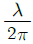
- λ/π
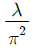
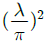
(정답률: 67%)
57. 다음 중 야기 안테나에 대한 설명으로 적합하지 않은 것은?
- 지향성은 단향성이다.
- 반사기의 길이는 투사기 보다 길다.
- TV 수신용 안테나로 많이 사용된다.
- 반사기의 수를 증가시키면 이득이 증가 된다.
(정답률: 65%)
58. 특성 임피던스가 1800[Ω]인 전송선로와 임피던스가 50[Ω]인 안테나를 λ/4 변성기를 삽입하여 임피던스 정합하려면 필요한 λ/4 변성기의 특성임피던스는 몇 [Ω]인가?
- 75[Ω]
- 150[Ω]
- 200[Ω]
- 300[Ω]
(정답률: 54%)
59. 다음 중 도파관에 창을 설치하는 목적으로 가장 적합한 것은?
- 반사파를 방해한다.
- 진행파를 방해한다.
- Slot 안테나로 동작한다.
- 도파관의 임피던스를 변환시킨다.
(정답률: 78%)
60. 다음 중 극초단파대에서 사용되는 안테나가 아닌 것은?
- 빔 안테나
- 파라볼라 안테나
- 카세그레인 안테나
- Horn reflector 안테나
(정답률: 68%)
4과목: 전자계산기 일반 및 무선설비기준
61. 다음 전송로(버스) 중 입출력 인터페이스 사이의 버스가 아닌것은?
- 제어버스
- 주소버스
- 데이터버스
- 시스템버스
(정답률: 70%)
62. 분기(branch), 인터럽트 혹은 서브루틴 명령이 실행되기 위해서는 다음 중 어느 레지스터의 내용이 변경되어야 하는가?
- 누산기(accumulator)
- 프로그램 카운터(program counter)
- 인덱스 레지스터(index register)
- PSW(Program Status Word)
(정답률: 73%)
63. 병행 프로그래밍에서 임계 구역에 대한 설명으로 가장 옳은 것은?
- 동시에 둘 이상의 프로세스가 동시에 접근해서는 안되는 공유 자원을 접근하는 코드의 일부를 말한다.
- 동시에 둘 이상의 프로세스가 동시에 독점 자원을 접근하는 코드의 일부를 말한다.
- 동시에 둘 이상의 프로세스가 순차적으로 접근해서는 안되는 공유 자원을 접근하는 코드의 일부를 말한다.
- 동시에 둘 이상의 프로세스가 순차적으로 독점 자원을 접근하는 코드의 일부를 말한다.
(정답률: 70%)
64. CPU의 상태를 나타내는 플래그(flag)가 아닌 것은?
- 패리티(parity) 플래그
- 사인(sign) 플래그
- 트랩(trap) 플래그
- 제로(zero) 플래그
(정답률: 81%)
65. 다음 중 비선점 스케줄링에 포함되지 않는 것은?
- FIFO(first in first out)
- SJF(shortest job first)
- HRN(highest response ratio next)
- SRT(shortest remaining time)
(정답률: 74%)
66. 중앙처리장치와 유사한 기능을 보유한 입출력 프로세서 혹은 입출력 컴퓨터를 추가하여 입출력 기능을 강화시킨 것은?
- 중앙처리장치에 의한 입출력
- 폴링에 의한 입출력
- DMA에 의한 입출력
- 채널에 의한 입출력
(정답률: 66%)
67. -9의 고정 소수점형식으로 표현한 것 중 틀린 것은?
- 10001001
- 11110110
- 11100110
- 11110111
(정답률: 70%)
68. 다음 중 자기보수(self Complement)의 특성과 거리가 먼 것은?
- 그레이 코드
- 3-초과 코드
- 2421 코드
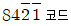
(정답률: 82%)
69. 다음 중 그레이 코드(Gray Code)의 특성과 거리가 먼 것은?
- 데이터 전송
- 입출력 장치
- 사칙연산
- A/D Convertor
(정답률: 66%)
70. 다음 중 AND 마이크로 동작을 수행한 결과와 같은 동작을 하는 것은?
- Mask 동작
- Shift 동작
- EX-OR 동작
- Packing 동작
(정답률: 77%)
71. 전파를 보내거나 받는 전기적 시설을 말하는 것은?
- 전파설비
- 무선설비
- 통신설비
- 전송설비
(정답률: 89%)
72. 방송통신위원회가 전파자원의 공평하고 효율적인 이용을 촉진하기 위하여 필요한 경우에 시행되어야 할 사항이 아닌 것은?
- 주파수분배의 변경
- 주파수의 국제등록
- 주파수의 공동사용
- 새로운 기술방식으로의 전환
(정답률: 60%)
73. 다음 ( ) 안에 들어갈 내용으로 가장 적합한 것은?
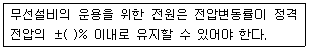
- 5
- 10
- 15
- 20
(정답률: 80%)
74. 송신장치의 종단증폭기의 정격출력으로 정의되는 것은?
- 규격전력
- 평균전력
- 반송파전력
- 첨두포락선전력
(정답률: 74%)
75. 다음 중 형식검정을 받아야 하는 무선설비의 기기는?
- 이동가입 무선전화장치
- 주파수공용 무선전화장치
- 주파수를 공동사용하고자 하는 경우
- 주파수대역을 정비하여 주파수의 이용효율을 높일 필요가 있는 경우
(정답률: 57%)
76. 다음 중 방송통신위원회가 주파수의 재배치를 할 수 있는 경우에 해당하지 않는 것은?
- 주파수 분배가 변경된 경우
- 주파수 이용실적이 낮은 경우
- 주파수를 공동사용하고자 하는 경우
- 주파수대역을 정비하여 주파수의 이용효율을 높일 필요가 있는 경우
(정답률: 44%)
77. 송신설비의 공중선ㆍ급전선 등 고압전기를 통하는 장치는 사람이 보행하거나 기거하는 평면으로부터 몇 [m] 이상의 높이에 설치되어야 하는가?
- 2[m]
- 2.5[m]
- 3[m]
- 3.5[m]
(정답률: 94%)
78. 무선국에서 사용하는 주파수 마다의 중심주파수로 정의되는 것은?
- 기준주파수
- 지정주파수
- 특성주파수
- 필요주파수
(정답률: 77%)
79. 다음 중 공중선계가 충족하여야 하는 조건에 속하지 않는 것은?
- 공중선은 이득이 높을 것
- 정합은 신호의 반사손실이 최소화되도록 할 것
- 공중선은 주복사각도의 폭이 충분히 클 것
- 지향성은 복사되는 전력이 목표하는 방향을 벗어나지 아니하도록 안정적일 것
(정답률: 75%)
80. 535[kHz] 초과 1606.5[kHz] 이하의 주파수를 사용하는 방송국의 주파수 허용편차는 몇 [Hz]인가?
- 1[Hz]
- 10[Hz]
- 30[Hz]
- 50[Hz]
(정답률: 79%)